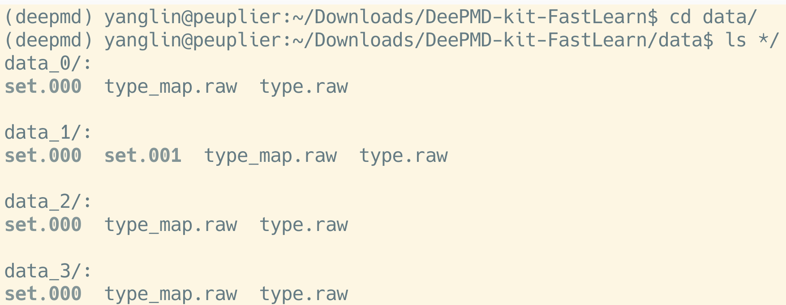
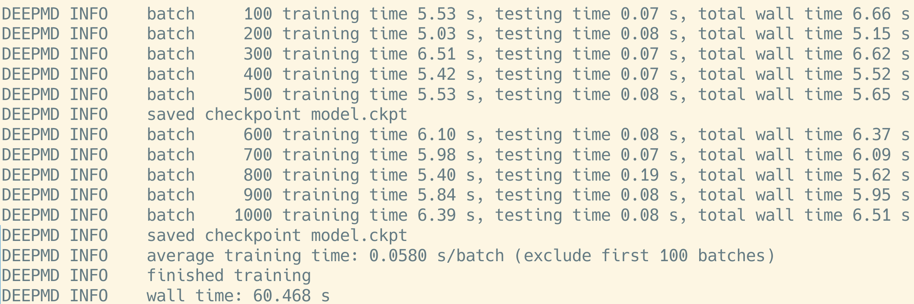

AI for Science
DeepMD
背景：从分子动力学(MD)到深度势(deep potential, DP)
分子动力学(molecular dynamics, MD)通过对原子、分子等微观粒子，在一定时间内运动状态的模拟，以动态观点考察系统随时间演化的行为。在最广泛的MD方法中，粒子$i$的运动通过数值求解牛顿运动方程$m\mathbf{a}_i=\mathbf{F}_i$获得。既然受力$\mathbf{F}_{i}$是势能(potential)$E$对坐标的负导数$\mathbf{F}_i=-\frac{\partial E}{\partial \mathbf{r}_i}$，建模MD仿真中粒子的可能构型(configuration)$\mathbf{\mathcal{R}}=\{\mathbf{r}_1, \mathbf{r}_2, \mathbf{r}_3, \ldots \}$与其势能$E(\mathbf{\mathcal{R}})$的对应关系就尤为重要，在MD的语境下，MD的”势(potential)”往往就是指这个对应关系。
$$ \mathbf{\mathcal{R}}\Rightarrow E(\mathbf{\mathcal{R}}) $$
为了建立上述关系，马上会想到的方法当然是第一性原理(ab initio)量子力学计算，采用密度泛函理论(density functional theory, DFT)、紧束缚近似等方法，固然可以对电子结构(从而对configuration的势能)进行计算，再利用MD方法更新configuration，是为ab initio MD (AIMD)方法。但AIMD的计算成本极高，不适合大规模MD仿真。因此，经典的MD方法，一般通过拟合一个函数表达式$f$，去构建经典MD”势(potential)”，我们讲到某某”势”的时候，其实常常是指建立一个拟合方法$\mathfrak{f}$去近似$f$：
$$ E(\mathbf{\mathcal{R}})\approx \mathfrak{f}\left(\mathbf{\mathcal{R}}\right) $$
在最一般的三维$N$原子情形下，$\mathbf{\mathcal{R}}$的维度是$3N$，$3N$个原子体系的量子力学效应会使$f$的拟合非常困难，是为”维度灾难(Curse of dimensionality)”。最近，机器学习(machine-learning, ML)的迅速发展，特别是深度神经网络(deep neural network, DNN)在拟合领域的广泛使用，为MD势的建模提供了一个新方向——在ML的视角下，$\mathfrak{f}$并不是一个确定的函数，而是一个DNN的”黑箱”，这个黑箱的输入是描述原子构型的参数$\mathcal{D}\left(\mathbf{\mathcal{R}}\right)$，称之为”描述子(descriptor)”，输出是其对应的势能，我们只要用ML的方法，训练这个DNN就可以了。在众多类似工作中，由王涵、张林峰、鄂维南等首创的”深度势能(deep potential MD, DeePMD/DPMD/DP)”方法[1],[2]是本课题组重点学习的方法，hal9000服务器已经被配置了DP方法的基本模块”deepmd-kit”：
conda create -n deepmd -c https://conda.deepmodeling.com -c defaults
conda activate deepmd
conda install deepmd-kit=*=*gpu libdeepmd=*=*gpu lammps cudatoolkit=11.6 horovod dpdata -c https://conda.deepmodeling.com -c defaults
sudo chgrp -R microTi deepmd/
sudo chmod 770 -R deepmd/
sudo chmod g+s deepmd
sudo chmod g-w deepmd
(在microTi用户组的)老师同学们可以通过
conda activate deepmd
启动并调用deepmd-kit环境。
5分钟教程
DeePMD手册上有一个5分钟教程，以这组数据为例子，说明了DeePMD的基本使用方法：Prepare data –> Training –> Freeze/Compress the model。
Prepare data 准备数据
准备数据的目的是：把一系列构型-势能关系数据(比如VASP的OUTCAR，关于如何生成这样的OUTCAR在后续节讨论)，转换成DP训练神经网络用的数据集及数据格式。
import dpdata
dpdata.LabeledSystem('OUTCAR').to('deepmd/npy', 'data', set_size=200)
样例中利用了这样的Python脚本：调用LabeledSystem(‘OUTCAR文件’)载入数据，并存成system数据结构；该数据结构的内建函数.to('格式', '目录名', set_size=每个集合的frame数量)用以转换输出数据。其中，frame数据结构表示一个构型及其对应的DFT计算结果。样例中已经有准备好了的数据集，在根目录的data子目录下：

Training 训练数据
训练数据的目的是：计算构型的描述子$\mathcal{D}$，抓取其对应的势能$E(\mathcal{D})$，训练DNN以建立二者的关联$\mathfrak{f}$。训练数据用的控制脚本在01.train子目录下的input.json。真正使用到我组关注的材料体系时，应在此脚本基础上稍加改动：
{
"_comment": " model parameters",
"model": {
"type_map": ["O", "H"],
"descriptor" :{
"type": "se_e2_a",
"sel": [46, 92],
"rcut_smth": 0.50,
"rcut": 6.00,
"neuron": [25, 50, 100],
"resnet_dt": false,
"axis_neuron": 16,
"seed": 1,
"_comment": " that's all"
},
"fitting_net" : {
"neuron": [240, 240, 240],
"resnet_dt": true,
"seed": 1,
"_comment": " that's all"
},
"_comment": " that's all"
},
"learning_rate" :{
"type": "exp",
"decay_steps": 5000,
"start_lr": 0.001,
"stop_lr": 3.51e-8,
"_comment": "that's all"
},
"loss" :{
"type": "ener",
"start_pref_e": 0.02,
"limit_pref_e": 1,
"start_pref_f": 1000,
"limit_pref_f": 1,
"start_pref_v": 0,
"limit_pref_v": 0,
"_comment": " that's all"
},
"training" : {
"training_data": {
"systems": ["../data/data_0/", "../data/data_1/", "../data/data_2/"],
"batch_size": "auto",
"_comment": "that's all"
},
"validation_data":{
"systems": ["../data/data_3"],
"batch_size": 1,
"numb_btch": 3,
"_comment": "that's all"
},
"numb_steps": 1000,
"seed": 10,
"disp_file": "lcurve.out",
"disp_freq": 100,
"save_freq": 500,
"_comment": "that's all"
},
"_comment": "that's all"
}
其中：
type_map参数：记录元素类型，应参考data/type_map.raw文件的顺序更改。sel参数：记录在计算描述子时，每个原子周围考虑多少个某（按type_map的顺序）元素的原子。training_data的systems参数：指定训练集的文件目录。validation_data的systems参数：指定验证集的文件目录。numb_steps参数：深度神经网络的训练采用”随机梯度下降算法(stochastic gradient descent, SGD)”，此参数设定训练的总步数。(例子中只训练了1000步，这是远远不够的。在实际使用时，应增加训练步数)
设置好参数后，利用deepmd-kit命令：
dp train input.json
训练DP-DNN：

训练中，lcurve.out文件记录着验证信息，第4、5列记录了测试集、验证集的能量误差，第6、7列记录了测试集、验证集的原子受力误差。
Freeze/Compress the model 冻结/压缩模型(DP势)
冻结/压缩模型(DP势)的目的是：保存训练好的DNN，供LAMMPS-DP模块等分子动力学软件使用。在训练目录下：
dp freeze -o graph.pb
也可以进一步压缩该DNN：
dp compress -i graph.pb -o graph-compress.pb
尽管样例的graph-compress.pb 比graph.pb要大很多……(待精读手册看看原因）